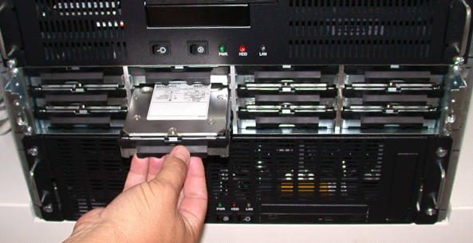
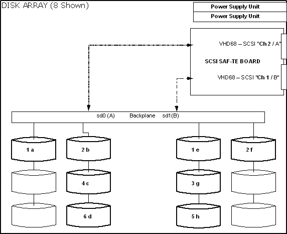
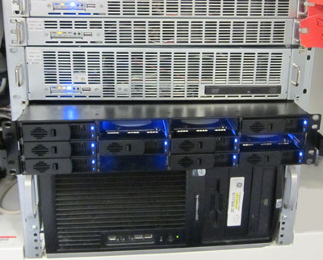

Operating Documentation
Direction 5193574-800, Rev# 22
LightSpeed 7.X Service Methods
Module Version 5.0, Version Date 8/6/12
Operating Documentation |
| Required Persons | Preliminary Reqs | Procedure | Finalization |
|---|---|---|---|
| 1 | Not Applicable | 35 mins | 20 mins |
This module contains the following replacement procedures for the GOC5 VCT Operator Console Scan Data Disk Array:
Replacement of Scan Data Disk Array (JBOD) Chassis (without Hard Disk Drives)
Replacement of Scan Data Disk Array (JBOD) Chassis (without Hard Disk Drives).
| NOTE: | Power Supplies, Cooling Modules and Controller are not long supplied as replaceable parts. |
Replacement of an individual Scan Data Hard Disk Drives
Replacement of an individual Scan Data Hard Disk Drives.
Upgrade of JBOD Assembly (5114536 to 5114536-40, Entire JBOD Assembly with Hard Disk Drive Swap)
Upgrade of JBOD Assembly (5114536 to 5114536-40, Entire JBOD Assembly with Hard Disk Drive Swap)
| Last Revised: | 25 June 2012 |
| Item | Qty | Effectivity | Part# | Manufacturer | |
|---|---|---|---|---|---|
| Medium Phillips Screwdriver | 1 | - | - | - | |
| Item | Qty | Effectivity | Part# | Manufacturer | |
|---|---|---|---|---|---|
| Scan Data Disk Array (JBOD) Assembly (Chassis minus Hard Drives) | 1 (AR) | - | 5114536-20 (original) or 5114536-30 (alternative) | - | |
| Scan Data Disk Drive (with sled) | 1-8 (AR) | - | 5114536-10 or | 5114536-10: Seagate ST373454LC - Firmware 002 | |
| - | - | - | 5114536-11 | 5114536-11: Seagate ST373455LC - Firmware 001 | |
| - | - | - | 5114536-12 | 5114636-12: Seagate ST373455LC - Firmware 001, With alternative JBOD (5114536-40) Mounting Sled | |
| ||||
| All cable connector screw-locks must be finger-tightened, only. Do NOT use any tool to tighten cable screw-locks. | ||||
| Condition | Reference | Effectivity |
|---|---|---|
Only trained service personnel should service the GE CT Scanner. | - | - |
Understand the conventions used in this publication | - |
The following procedures are specifically created for the original JBOD Chassis (5114536-20), the procedural step for replacing the JBOD Chassis using the alternative (5114536-30) is the same except for small changes noted in the procedures below. Note: if upgrading from a 5114536–20 to a 5114536–30 JBOD chassis, disk drive locations will be different. See Section 4.6 for details.
Select one of the following methods to Power OFF the Operator Console:
If Applications are up, select the Shut Down icon and then select [Shutdown].
| ||||
| (For 06MW03.X Software) Wait 1-2 minutes after the “System halted” message appears, to allow the DARC Node to properly power-down. Future SW releases (e.g., 06MW29.x) have corrected this issue. | ||||
If Applications are down, open a Unix Shell at the Toolchest. Type:
{ctuser@hostname} halt
The Operator Console monitor will display a System halted message when it is acceptable to power OFF the Operator Console.
Power OFF the Operator Console at the front panel switch. (Refer to Illustration 1.)
Illustration 1: Power Switch

Remove the front and rear Operator Console cover.
Remove all rear cable connection to the Disk Array (JBOD) Chassis. Verify each cable is present and clearly marked, if necessary add a label for clarity.
Remove the front cover of the Disk Array (JBOD) Chassis.
| NOTE: | Alternative JBOD Chassis (5114536-30) does not have a front cover. Skip step. |
Turn the two (2) knobs on the front cover to the horizontal position, then remove the Disk Array front cover.
Illustration 2: Disk Array Front Cover

Remove and retain the four (4) front mounting screws.
| ||||
| Failure to return the disks to their proper location will result in potential lost patient raw data. | ||||
Remove each disk from the JBOD Chassis individually, and clearly mark them so that they can be returned to the same slot location in the new replacement JBOD.
Remove each disk or empty sled as shown in Illustration 3.
Label each disk as shown in Illustration 4.
Illustration 3: Remove Individual Drives

Illustration 4: Disk Numbering

Slide out the Disk Array (JBOD) Chassis.
Install the replacement Disk Array (JBOD) Chassis in the Operator Console.
Slide the Disk Array (JBOD) Chassis into the Operator Console.
| ||||
| Failure to return the disks to their proper location will result in potential lost patient raw data. | ||||
Return each Disk or empty sled to its proper position inside the Disk Array (JBOD) chassis.
Replace the four (4) front mounting screws on the front of the Disk Array (JBOD) Chassis.
Replace the front cover screen to the Disk Array (JBOD) Chassis.
| NOTE: | Alternative JBOD Chassis (5114536-30) does not have a front cover. Skip step. |
Replace all rear cable connections to the Disk Array (JBOD) Chassis.
See Illustration 2.
| NOTE: | All cable connector screw-locks must be finger-tightened, only. Do NOT use any tool to tighten cable screw-locks. Verify that the SCSI Cable is on straight. |
Perform all Disk Array RAID Tests per Disk Array RAID Testing
Continue with Sections 4.4, 4.5 and Finalization.
The following procedures are specifically created for the original JBOD Assembly (5114536), the procedural step for replacing the Scan Data Hard Disk Drive in the alternative JBOD Assembly (5114536-40) is the same except for small changes noted in the procedures below.
Select one of the following methods to Power OFF the Operator Console:
If Applications are up, select the Shut Down icon and then select [Shutdown].
| ||||
| (For 06MW03.X Software) Wait 1-2 minutes after the “System halted” message appears, to allow the DARC Node to properly power-down. Future SW releases (e.g., 06MW29.x) have corrected this issue. | ||||
If Applications are down, open a Unix Shell at the Toolchest. Type:
{ctuser@hostname} halt
The Operator Console monitor will display a System halted message when it is acceptable to power OFF the Operator Console.
Power OFF the Operator Console at the front panel switch. (Refer to Illustration 1.)
Remove the front Operator Console cover.
Remove the front cover of the Disk Array (JBOD) Chassis:
| NOTE: | Alternative JBOD Chassis (5114536-30) does not have a front cover. Skip Step. |
Turn two knobs on the front cover to horizontal position, then take off the front cover from the Disk Array.
Illustration 5: Front Cover of Disk Array Assembly

Pull the Scan Disk Drive (with sled) out the Disk Array (JBOD).
Illustration 6: Remove Disk Drive (with Sled)
Insert new Scan Disk Driver (with sled) in the Disk Array (JBOD) at the original position of the old disk drive.
Replace the four (4) front mounting screws on the front of the Disk Array (JBOD).
Replace the front cover screen to the Disk Array (JBOD) Chassis.
| NOTE: | Alternative JBOD Chassis (5114536-30) does not have a front cover. Skip Step. |
Power ON the Operator Console at the front switch.
At the VDARC Node verify the front panel Power LED is ON. If not, press the front panel power switch (hold 3-10 seconds) to apply power to the VDARC Node.
At the VIG Node verify the front panel Power LED is ON. If not, press the front panel power switch (hold 3-10 seconds) to apply power to the VIG Node.
At the Disk Array (JBOD) verify two green LEDs at rear panel is on. If not, press the two power switches at rear panel to apply power to the Disk Array (JBOD).
Stop Applications from auto-starting at the 5 second Warning Message.
Perform the Create, Assemble and Query Disk Array RAID Tests per Disk Array RAID Testing
Continue with Sections 4.4, 4.5 and Finalization.
The following procedure was specifically created for the original JBOD Assembly (5114536). The procedure below are still the same for the alternative JBOD Assembly (5114536-40), but command outputs in table will vary from shown.
Open a Unix Shell as root and type the following commands to verify 8 disks are present. Additionally, /dev/md0 can be checked to see if /raw_data is mounted using the df or df /raw_data command.
{ctuser@hostname} rsh darc
{ctuser@darc} df
[root@darc] sg_map -i -x
Verify Disks and Mount State Command Output:
Table 1: JBOD Assembly (5114536) - Verify Disks and Mount State Command Output
{ctuser@hostname}[3] rsh darc
Last login: Thu Jul 27 12:39:59 from oc
[ctuser@darc ~]$ df
Filesystem 1K-blocks Used Available Use% Mounted on
/dev/hda2 4182720 2821880 1360840 68% /
/dev/hda1 101086 5107 90760 6% /boot
none 3117332 2242436 874896 72%
/dev/shm/dev/hda9 65625544 45340 65580204 1% /usr/g
/dev/md0 515938304 971744 514966560 1% /raw_data
[ctuser@darc ~]$ su -
Password: #bigguy
[root@darc ~]# sg_map -i -x
/dev/sg0 0 0 1 0 0 /dev/sda SEAGATE ST373454LC 0002
/dev/sg1 0 0 2 0 0 /dev/sdb SEAGATE ST373454LC 0002
/dev/sg2 0 0 4 0 0 /dev/sdc SEAGATE ST373454LC 0002
/dev/sg3 0 0 6 0 0 /dev/sdd SEAGATE ST373454LC 0002
/dev/sg4 0 0 15 0 3 nStor NexStor 4000S 2.02
/dev/sg5 1 0 1 0 0 /dev/sde SEAGATE ST373454LC 0002
/dev/sg6 1 0 2 0 0 /dev/sdf SEAGATE ST373454LC 0002
/dev/sg7 1 0 3 0 0 /dev/sdg SEAGATE ST373454LC 0002
/dev/sg8 1 0 5 0 0 /dev/sdh SEAGATE ST373454LC 0002
/dev/sg9 1 0 15 0 3 nStor NexStor 4000S 2.02
[root@darc ~]# cat /proc/scsi/scsi
Attached devices:
Host: scsi0 Channel: 00 Id: 01 Lun: 00
Vendor: SEAGATE Model: ST373454LC Rev: 0002
Type: Direct-Access ANSI SCSI revision: 03
Host: scsi0 Channel: 00 Id: 02 Lun: 00
Vendor: SEAGATE Model: ST373454LC Rev: 0002
Type: Direct-Access ANSI SCSI revision: 03
Host: scsi0 Channel: 00 Id: 04 Lun: 00
Vendor: SEAGATE Model: ST373454LC Rev: 0002
Type: Direct-Access ANSI SCSI revision: 03
Host: scsi0 Channel: 00 Id: 06 Lun: 00
Vendor: SEAGATE Model: ST373454LC Rev: 0002
Type: Direct-Access ANSI SCSI revision: 03
Host: scsi0 Channel: 00 Id: 15 Lun: 00
Vendor: nStor Model: NexStor 4000S Rev: 2.02
Type: Processor ANSI SCSI revision: 02
Host: scsi1 Channel: 00 Id: 01 Lun: 00
Vendor: SEAGATE Model: ST373454LC Rev: 0002
Type: Direct-Access ANSI SCSI revision: 03
Host: scsi1 Channel: 00 Id: 02 Lun: 00
Vendor: SEAGATE Model: ST373454LC Rev: 0002
Type: Direct-Access ANSI SCSI revision: 03
Host: scsi1 Channel: 00 Id: 03 Lun: 00
Vendor: SEAGATE Model: ST373454LC Rev: 0002
Type: Direct-Access ANSI SCSI revision: 03
Host: scsi1 Channel: 00 Id: 05 Lun: 00
Vendor: SEAGATE Model: ST373454LC Rev: 0002
Type: Direct-Access ANSI SCSI revision: 03
Host: scsi1 Channel: 00 Id: 15 Lun: 00
Vendor: nStor Model: NexStor 4000S Rev: 2.02
Type: Processor ANSI SCSI revision: 02
[root@darc ~]# cat /proc/scsi/aic79xx/{0,1}
Adaptec AIC79xx driver version: 1.3.11
Adaptec AIC7902 Ultra320 SCSI adapter
aic7902: Ultra320 Wide Channel A, SCSI Id=7, PCI-X 67-100Mhz, 512 SCBs
Allocated SCBs: 64, SG List Length: 128
Serial EEPROM:
0x17c8 0x17c8 0x17c8 0x17c8 0x17c8 0x17c8 0x17c8 0x17c8
0x17c8 0x17c8 0x17c8 0x17c8 0x17c8 0x17c8 0x17c8 0x17c8
0x09f4 0x0146 0x2807 0x0010 0xffff 0xffff 0xffff 0xffff0
xffff 0xffff 0xffff 0xffff 0xffff 0xffff 0x0430 0xb3f7
Target 0 Negotiation Settings
User: 320.000MB/s transfers (160.000MHz DT|IU|QAS, 16bit)
Target 1 Negotiation Settings
User: 320.000MB/s transfers (160.000MHz DT|IU|QAS, 16bit)
Goal: 320.000MB/s transfers (160.000MHz DT|IU|QAS, 16bit)
Curr: 320.000MB/s transfers (160.000MHz DT|IU|QAS, 16bit)
Transmission Errors 0
Channel A Target 1 Lun 0 Settings
Commands Queued 7659
Commands Active 0
Command Openings 32
Max Tagged Openings 32
Device Queue Frozen Count 0
Target 2 Negotiation Settings
User: 320.000MB/s transfers (160.000MHz DT|IU|QAS, 16bit)
Goal: 320.000MB/s transfers (160.000MHz DT|IU|QAS, 16bit)
Curr: 320.000MB/s transfers (160.000MHz DT|IU|QAS, 16bit)
Transmission Errors 0
Channel A Target 2 Lun 0 Settings
Commands Queued 7647
Commands Active 0
Command Openings 32
Max Tagged Openings 32
Device Queue Frozen Count 0
Target 3 Negotiation Settings
User: 320.000MB/s transfers (160.000MHz DT|IU|QAS, 16bit)
Target 4 Negotiation Settings
User: 320.000MB/s transfers (160.000MHz DT|IU|QAS, 16bit)
Goal: 320.000MB/s transfers (160.000MHz DT|IU|QAS, 16bit)
Curr: 320.000MB/s transfers (160.000MHz DT|IU|QAS, 16bit)
Transmission Errors 0
Channel A Target 4 Lun 0 Settings
Commands Queued 7756
Commands Active 0
Command Openings 32
Max Tagged Openings 32
Device Queue Frozen Count 0
Target 5 Negotiation Settings
User: 320.000MB/s transfers (160.000MHz DT|IU|QAS, 16bit)
Target 6 Negotiation Settings
User: 320.000MB/s transfers (160.000MHz DT|IU|QAS, 16bit)
Goal: 320.000MB/s transfers (160.000MHz DT|IU|QAS, 16bit)
Curr: 320.000MB/s transfers (160.000MHz DT|IU|QAS, 16bit)
Transmission Errors 0
Channel A Target 6 Lun 0 Settings
Commands Queued 7597
Commands Active 0
Command Openings 32
Max Tagged Openings 32
Device Queue Frozen Count 0
Target 7 Negotiation Settings
User: 320.000MB/s transfers (160.000MHz DT|IU|QAS, 16bit)
Target 8 Negotiation Settings
User: 320.000MB/s transfers (160.000MHz DT|IU|QAS, 16bit)
Target 9 Negotiation Settings
User: 320.000MB/s transfers (160.000MHz DT|IU|QAS, 16bit)
Target 10 Negotiation Settings
User: 320.000MB/s transfers (160.000MHz DT|IU|QAS, 16bit)
Target 11 Negotiation Settings
User: 320.000MB/s transfers (160.000MHz DT|IU|QAS, 16bit)
Target 12 Negotiation Settings
User: 320.000MB/s transfers (160.000MHz DT|IU|QAS, 16bit)
Target 13 Negotiation Settings
User: 320.000MB/s transfers (160.000MHz DT|IU|QAS, 16bit)
Target 14 Negotiation Settings
User: 320.000MB/s transfers (160.000MHz DT|IU|QAS, 16bit)
Target 15 Negotiation Settings
User: 320.000MB/s transfers (160.000MHz DT|IU|QAS, 16bit)
Goal: 6.600MB/s transfers (16bit)
Curr: 6.600MB/s transfers (16bit)
Transmission Errors 0
Channel A Target 15 Lun 0 Settings
Commands Queued 1369
Commands Active 0
Command Openings 1
Max Tagged Openings 0
Device Queue Frozen Count 0
Adaptec AIC79xx driver version: 1.3.11
Adaptec AIC7902 Ultra320 SCSI adapter
aic7902: Ultra320 Wide Channel B, SCSI Id=7, PCI-X 67-100Mhz, 512 SCBs
Allocated SCBs: 56, SG List Length: 128
Serial EEPROM:
0x17c8 0x17c8 0x17c8 0x17c8 0x17c8 0x17c8 0x17c8 0x17c8
0x17c8 0x17c8 0x17c8 0x17c8 0x17c8 0x17c8 0x17c8 0x17c8
0x09f4 0x0146 0x2807 0x0010 0xffff 0xffff 0xffff 0xffff
0xffff 0xffff 0xffff 0xffff 0xffff 0xffff 0x0430 0xb3f7
Target 0 Negotiation Settings
User: 320.000MB/s transfers (160.000MHz DT|IU|QAS, 16bit)
Target 1 Negotiation Settings
User: 320.000MB/s transfers (160.000MHz DT|IU|QAS, 16bit)
Goal: 320.000MB/s transfers (160.000MHz DT|IU|QAS, 16bit)
Curr: 320.000MB/s transfers (160.000MHz DT|IU|QAS, 16bit)
Transmission Errors 0
Channel A Target 1 Lun 0 Settings
Commands Queued 7705
Commands Active 0
Command Openings 32
Max Tagged Openings 32
Device Queue Frozen Count 0
Target 2 Negotiation Settings
User: 320.000MB/s transfers (160.000MHz DT|IU|QAS, 16bit)
Goal: 320.000MB/s transfers (160.000MHz DT|IU|QAS, 16bit)
Curr: 320.000MB/s transfers (160.000MHz DT|IU|QAS, 16bit)
Transmission Errors 0
Channel A Target 2 Lun 0 Settings
Commands Queued 7647
Commands Active 0
Command Openings 32
Max Tagged Openings 32
Device Queue Frozen Count 0
Target 3 Negotiation Settings
User: 320.000MB/s transfers (160.000MHz DT|IU|QAS, 16bit)
Goal: 320.000MB/s transfers (160.000MHz DT|IU|QAS, 16bit)
Curr: 320.000MB/s transfers (160.000MHz DT|IU|QAS, 16bit)
Transmission Errors 0
Channel A Target 3 Lun 0 Settings
Commands Queued 7558
Commands Active 0
Command Openings 32
Max Tagged Openings 32
Device Queue Frozen Count 0
Target 4 Negotiation Settings
User: 320.000MB/s transfers (160.000MHz DT|IU|QAS, 16bit)
Target 5 Negotiation Settings
User: 320.000MB/s transfers (160.000MHz DT|IU|QAS, 16bit)
Goal: 320.000MB/s transfers (160.000MHz DT|IU|QAS, 16bit)
Curr: 320.000MB/s transfers (160.000MHz DT|IU|QAS, 16bit)
Transmission Errors 0
Channel A Target 5 Lun 0 Settings
Commands Queued 7560
Commands Active 0
Command Openings 32
Max Tagged Openings 32
Device Queue Frozen Count 0
Target 6 Negotiation Settings
User: 320.000MB/s transfers (160.000MHz DT|IU|QAS, 16bit)
Target 7 Negotiation Settings
User: 320.000MB/s transfers (160.000MHz DT|IU|QAS, 16bit)
Target 8 Negotiation Settings
User: 320.000MB/s transfers (160.000MHz DT|IU|QAS, 16bit)
Target 9 Negotiation Settings
User: 320.000MB/s transfers (160.000MHz DT|IU|QAS, 16bit)
Target 10 Negotiation Settings
User: 320.000MB/s transfers (160.000MHz DT|IU|QAS, 16bit)
Target 11 Negotiation Settings
User: 320.000MB/s transfers (160.000MHz DT|IU|QAS, 16bit)
Target 12 Negotiation Settings
User: 320.000MB/s transfers (160.000MHz DT|IU|QAS, 16bit)
Target 13 Negotiation Settings
User: 320.000MB/s transfers (160.000MHz DT|IU|QAS, 16bit)
Target 14 Negotiation Settings
User: 320.000MB/s transfers (160.000MHz DT|IU|QAS, 16bit)
Target 15 Negotiation Settings
User: 320.000MB/s transfers (160.000MHz DT|IU|QAS, 16bit)
Goal: 6.600MB/s transfers (16bit)
Curr: 6.600MB/s transfers (16bit)
Transmission Errors 0
Channel A Target 15 Lun 0 Settings
Commands Queued 1369
Commands Active 0
Command Openings 1
Max Tagged Openings 0
Device Queue Frozen Count 0
[root@darc ~]# |
The following procedure was specifically created for the original JBOD Assembly (5114536). The procedure below are still the same for the alternative JBOD Assembly (5114536-40), but command outputs in table will vary from shown.
| NOTE: | A special create command (sudo gre-raid -c -z) is available for sites that experience issues with the individual disk drive (a good drive the system has tagged as bad). This command still destroys all data by repartitioning or creating the Disk Array. Additionally, it erases the Disk drive serial numbers for the Disk Array (JBOD) allowing reuse of a Disk Drive. Do not use this command on intermittent or faulty Disk Drives. Replace bad Disk Drives. Do Not perform this command if Patient data is not fully backed up. Application Software must be down to perform the create command for the Disk Array. |
Open a Unix Shell and type the following:
| NOTE: | The create command (sudo gre-raid -c) destroys all data by repartitioning or creating the Disk Array. Do Not perform this command if Patient data is not fully backed up. Application Software must be down to perform the create command for the Disk Array. |
{ctuser@hostname} rsh darc
{ctuser@darc} sudo gre-raid -c
************************** Warning ****************************** * If a new disk array is created, all scan data on the current * * disk array will be lost. * *****************************************************************
Are you sure you want to create a new disk array (yes/no)? yes
Table 2: JBOD Assembly (5114536) - Create Command Output
{ctuser@hostname}[1] rsh darc
Last login: Mon Jul 24 17:03:43 from oc
[ctuser@darc ~]$ sudo gre-raid -c
gre-raid: built Jul 26 2006 01:25:35
/dev/sd<x>: scanning disk array...done
Device Bus ID Mfg Model Fwrev Serial-number
/dev/sda 0 1 SEAGATE ST373454LC 0002 3KP27DK800007629V19S
/dev/sdb 0 2 SEAGATE ST373454LC 0002 3KP1TAA90000761881Q9
/dev/sdc 0 4 SEAGATE ST373454LC 0002 3KP295VT000076294WNX
/dev/sdd 0 6 SEAGATE ST373454LC 0002 3KP1RTLP000076189Z4Z
/dev/sde 1 1 SEAGATE ST373454LC 0002 3KP29XKX000076297ACR
/dev/sdf 1 2 SEAGATE ST373454LC 0002 3KP1T1C3000076189XFY
/dev/sdg 1 3 SEAGATE ST373454LC 0002 3KP1T31D000076187YRP
/dev/sdh 1 5 SEAGATE ST373454LC 0002 3KP29XX3000076297ADA
Adaptec driver not found. Continuing...
dasType: VDAS_64
/usr/g/config/gre-raid-8.cfg: RAID-0 profile
/raw_data: unmounting filesystem...done
/dev/md0: stopping...done
/var/log/messages: checking for SCSI errors...done
************************** Warning ******************************
* If a new disk array is created, all scan data on the current *
* disk array will be lost. *
*****************************************************************
Are you sure you want to create a new disk array (yes/no)? yes
/var/log/messages: 0 drive(s) found with SCSI errors found since last start
/dev/sda: testing...52.8MB/sec...done
/dev/sdb: testing...52.5MB/sec...done
/dev/sdc: testing...52.6MB/sec...done
/dev/sdd: testing...52.6MB/sec...done
/dev/sde: testing...52.8MB/sec...done
/dev/sdf: testing...52.7MB/sec...done
/dev/sdg: testing...52.4MB/sec...done
/dev/sdh: testing...52.8MB/sec...done
/dev/sda: partitioning...done
/dev/sdb: partitioning...done
/dev/sdc: partitioning...done
/dev/sdd: partitioning...done
/dev/sde: partitioning...done
/dev/sdf: partitioning...done
/dev/sdg: partitioning...done
/dev/sdh: partitioning...done
/dev/md0: creating disk array...done
/dev/md0: RAID-0 active with (8) drives, 256k chunk size, and 493GB capacity
/dev/md0: creating filesystem...done
/raw_data: mounting /dev/md0 filesystem...done
/raw_data: testing...407.6MB/sec...done
/raw_data: 0.0% used, 492.0GB avail
gre-raid: success
[ctuser@darc ~]$ |
Verify the create partitions diagnostic passes and all output looks good.
Perform the assemble and query commands if the create has been successful.
The following procedure was specifically created for the original JBOD Assembly (5114536). The procedure below are still the same for the alternative JBOD Assembly (5114536-40), but command outputs in table will vary from shown.
Open a Unix Shell and type the following:
| NOTE: | Application Software must be down to perform the assemble commands for the Disk Array. The Operator Console can not be scanning or manipulating Scan Data during the testing. |
{ctuser@hostname} rsh darc
{ctuser@darc} sudo gre-raid -a
Table 3: JBOD Assembly (5114536) - Assemble Command Output
{ctuser@hostname}[1] rsh darc
Last login: Mon Jul 24 17:03:43 from oc
[ctuser@darc ~]$ sudo gre-raid -a
gre-raid: built Jul 26 2006 01:25:35
/dev/sd<x: scanning disk array...done
Device Bus ID Mfg Model Fwrev Serial-number
/dev/sda 0 1 SEAGATE ST373454LC 0002 3KP27DK800007629V19S
/dev/sdb 0 2 SEAGATE ST373454LC 0002 3KP1TAA90000761881Q9
/dev/sdc 0 4 SEAGATE ST373454LC 0002 3KP295VT000076294WNX
/dev/sdd 0 6 SEAGATE ST373454LC 0002 3KP1RTLP000076189Z4Z
/dev/sde 1 1 SEAGATE ST373454LC 0002 3KP29XKX000076297ACR
/dev/sdf 1 2 SEAGATE ST373454LC 0002 3KP1T1C3000076189XFY
/dev/sdg 1 3 SEAGATE ST373454LC 0002 3KP1T31D000076187YRP
/dev/sdh 1 5 SEAGATE ST373454LC 0002 3KP29XX3000076297ADA
Adaptec driver not found. Continuing...
dasType: VDAS_64
/usr/g/config/gre-raid-8.cfg: RAID-0 profile
/raw_data: unmounting filesystem...done
/dev/md0: stopping...done
/var/log/messages: checking for SCSI errors...done
/var/log/messages: 0 drive(s) found with SCSI errors found since last start
/dev/sda: testing...52.5MB/sec...done
/dev/sdb: testing...52.5MB/sec...done
/dev/sdc: testing...52.8MB/sec...done
/dev/sdd: testing...52.6MB/sec...done
/dev/sde: testing...52.8MB/sec...done
/dev/sdf: testing...52.6MB/sec...done
/dev/sdg: testing...52.7MB/sec...done
/dev/sdh: testing...52.8MB/sec...done
/dev/md0: starting...done
/dev/md0: RAID-0 active with (8) drives, 256k chunk size, and 493GB capacity
/raw_data: mounting /dev/md0 filesystem...done
/raw_data: testing...409.8MB/sec...done
/raw_data: 0.0% used, 492.0GB avail
gre-raid: success
[ctuser@darc ~]$ |
Verify assemble diagnostic passes and all output looks good.
Perform the query command if the assemble has been successful.
The following procedure was specifically created for the original
JBOD Assembly (5114536). The procedure below are still the same for
the alternative JBOD Assembly (5114536-40), but command outputs in
table will vary from shown. Click on this media file  to see differences between the between the original and alternative
JBODs when executing the gre-raid -q command. Note: The command output for the alternative JBOD will
not correctly represent the physical hard drive locations.
to see differences between the between the original and alternative
JBODs when executing the gre-raid -q command. Note: The command output for the alternative JBOD will
not correctly represent the physical hard drive locations.
Open a Unix Shell and type the following:
| NOTE: | A query can be performed at any time with Application software up or down. The preferred method is to test with Application software down. The Operator Console can not be scanning or manipulating Scan Data during the testing. |
{ctuser@hostname} rsh darc
{ctuser@darc} sudo gre-raid -q
Table 4: JBOD Assembly (5114536) - Query Command Output
{ctuser@hostname}[1] rsh darc
Last login: Mon Jul 24 17:03:43 from oc
[ctuser@darc ~]$ sudo gre-raid -q
gre-raid: built Jul 26 2006 01:25:35
/dev/sd< x>: scanning disk array...done
Device Bus ID Mfg Model Fwrev Serial-number
/dev/sda 0 1 SEAGATE ST373454LC 0002 3KP27DK800007629V19S
/dev/sdb 0 2 SEAGATE ST373454LC 0002 3KP1TAA90000761881Q9
/dev/sdc 0 4 SEAGATE ST373454LC 0002 3KP295VT000076294WNX
/dev/sdd 0 6 SEAGATE ST373454LC 0002 3KP1RTLP000076189Z4Z
/dev/sde 1 1 SEAGATE ST373454LC 0002 3KP29XKX000076297ACR
/dev/sdf 1 2 SEAGATE ST373454LC 0002 3KP1T1C3000076189XFY
/dev/sdg 1 3 SEAGATE ST373454LC 0002 3KP1T31D000076187YRP
/dev/sdh 1 5 SEAGATE ST373454LC 0002 3KP29XX3000076297ADA
Adaptec driver not found. Continuing...
dasType: VDAS_64
/usr/g/config/gre-raid-8.cfg: RAID-0 profile
/var/log/messages: checking for SCSI errors...done
/var/log/messages: 0 drive(s) found with SCSI errors found since last start
/dev/sda: testing...52.2MB/sec...done
/dev/sdb: testing...52.5MB/sec...done
/dev/sdc: testing...52.5MB/sec...done
/dev/sdd: testing...52.6MB/sec...done
/dev/sde: testing...52.8MB/sec...done
/dev/sdf: testing...52.6MB/sec...done
/dev/sdg: testing...52.4MB/sec...done
/dev/sdh: testing...52.8MB/sec...done
Disk Array Chassis Layout - Configured
|===============================================|
| [DRIVE] | [DRIVE] | [DRIVE] | [DRIVE] |
|===============================================|
| <empty> | [DRIVE] | [DRIVE] | <empty> |
|===============================================|
| <empty> | [DRIVE] | [DRIVE] | <empty> |
|===============================================|
Disk Array Chassis Layout - Current
|===============================================|
| sda: pass | sdb: pass | sde: pass | sdf: pass |
|===============================================|
| <empty> | sdc: pass | sdg: pass | <empty> |
|===============================================|
| <empty> | sdd: pass | sdh: pass | <empty> |
|===============================================|
/raw_data: testing...419.4MB/sec...done
/raw_data: 0.0% used, 492.0GB avail
gre-raid: success
[ctuser@darc ~]$ |
Verify query diagnostic passes and all output looks good.
Type: {ctuser@darc} exit
Close the Unix Shell: {ctuser@hostname} exit
{ctuser@hostname} st
If Application software fails with a halt due tot the Disk Array:
Turn Off power at the front switch on the Operator Console.
Wait one minute for the Disk Array to settle.
Turn On power at the front switch on the Operator Console.
Do Not allow CT Application Software to start-up.
View the gesyslog. Locate the startup time of Application software that just halted. Look for a message related to gre-raid. If the Disk Array is the problem, a message will be present identifying a failure with the gre-raid (Disk Array).
The Reconstruction (not Scan) portion of the system can be tested at this point.
Click on the [RETRO RECON] selection on the left monitor.
Click on [RAT GOLD] series.
Click on [SELECT SERIES].
Click on [CONFIRM].
Verify the image(s) reconstruct and are displayed.
Click on [QUIT].
Due to part obsolescence, the JBOD Assembly (5114536 - Scan Data Disk Array) is no longer manufactured. A new supplier has been identified and a new JBOD Assembly has been cut into forward production for the GOC5 Operator Consoles. The new JBOD Assembly (5114536-40) functions the same as the original JBOD, using the same Hard Disk Drives, but has significant hardware changes. In the event the original JBOD Chassis FRU (5114536-20) is not longer available, the JBOD Assembly will need to be upgraded to the alternative version.
Table 5: JBOD Upgrade Kit (5114536-80)
| JBOD Assembly Upgrade Kit | FRU | Description | Qty |
| 5114536-80 | 5114536-30 | JBOD Chassis (minus Hard Drives) | 1 |
| 5114536-32 | Empty Mounting Sled (minus Hard Drives | 8 | |
| 5401424 | 3 ft VHDCI to HD68 Ultra320 SCSI cable | 2 |
Illustration 7: Alternative JBOD Assembly (5114536-40)

Remove old JBOD Assembly.
Disconnect original SCSI Cables from DARC Computer and original JBOD (Discard).
Disconnect the two (2) AC Power Cables from original JBOD Chassis.
Remove original JBOD Assembly (with Hard Drives) from operator console.
Install new JBOD Assembly
Install new JBOD Chassis (Note: will not contain Hard Drives).
Install new SCSI Cables between new JBOD Chassis and DARC Computer.
DARC CH 1B > JBOD Host 1
DARC CH 2A > JBOD Host 2
Plug in two (2) AC Power Cables to new JBOD Assembly.
Power cable labeled “J4 Disk Array Left” > New JBOD Upper Power Interface
Power cable labeled “J11 Disk Array Right” > New JBOD Lower Power Interface
Swap Hard Drives between original and new JBOD Assemblies
| NOTE: | To avoid recreating array and scan database, hard drive transfer between original and new JBOD chassis must follow the following pattern. The illustrations below are representative of bay locations of the two units. The hard drives shall be installed in the bays identified. If the transfer is not performed correctly or hard drives are replaced in the process, a new scan data array and database must be created. |
Remove Hard Drive in Sled for original JBOD Chassis
Remove Hard Drive from Sled
Remove empty new Sled from new JBOD Chassis
Install Hard Drive into new Sled
Install new Sled with Hard Drive into new JBOD Chassis in appropriate bay location
| NOTE: | Perform the process on one hard drive, and then repeat for the remaining drives. Do one drive at a time; as to not loose track of hard drive bay location. |
| Original JBOD (5114536) - Hard Drive Bay Location (front view) | |||
| ID 1: HD 1 | ID 2: HD 2 | ID 1: HD 5 | ID 2: HD 6 |
| ID 4: HD 3 | ID 3: HD 7 | ||
| ID 6: HD 4 | ID 5: HD 8 | ||
| New JBOD (5114536-40) - Hard Drive Bay Location (front view) | |||
| ID6: HD 4 | ID3: HD 7 | ||
| ID1: HD 1 | ID4: HD 3 | ID1: HD 5 | |
| ID2: HD 2 | ID2: HD 6 | ID5: HD 8 | |
Take some scans (e.g., scout, axial and helical).
Verify the image(s) reconstruct and are displayed.
Install the cover of Disk Array (JBOD), if removed.
Install the front and rear Operator Console covers.